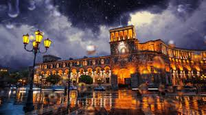

This is a small website about beautiful capital of Armenia - Yerevan. It has history of more than 2800 years, and has many cool places to speak about. In this website you can find information about a couple of its attractions and restaurants.Cras fringilla augue porttitor massa vulputate dictum. In ut velit fermentum, ornare libero vitae, pellentesque dolor. Etiam scelerisque erat a sodales mollis. Nam ornare consectetur porta. Suspendisse porttitor risus in convallis efficitur. Ut eu massa gravida, pretium nunc at, egestas ex. Suspendisse nec sollicitudin mauris, eget aliquam nisl. Fusce tristique risus nec lobortis tincidunt. Donec faucibus lectus quis nisi finibus pulvinar.